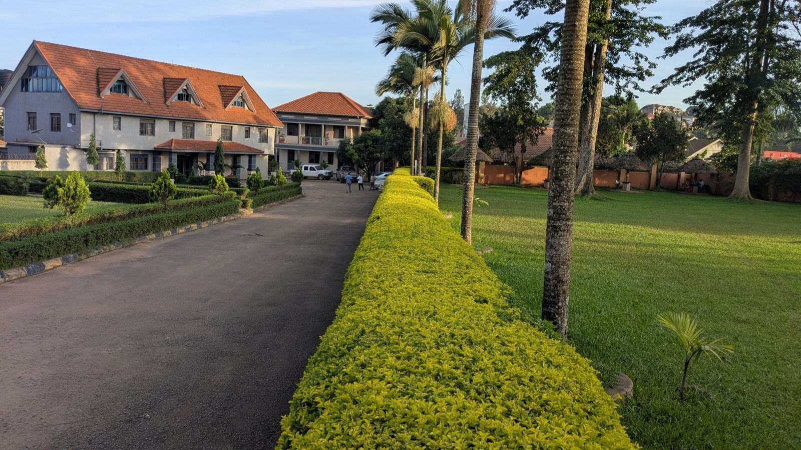

Priser
Tydliga priser utan överraskningar.
Glashus från grund till glas
- Populärast
Växthus
Klassiskt växthus i kärnfuru.
fr. 129 000 kr10 m², monterat- Härdat glas i väggar och tak
- Två automatiska takluckor
- Grund och montage
- Linoljemålat i valfri kulör
Orangeri
Uppvärmt glashus för övervintring.
fr. 385 000 kr18 m², monterat- Isolerglas och golvvärme
- Frostvakt med sms-larm
- Bygglovsritningar
- Skuggväv och ventilation
Restaurering
För gamla växthus och orangerier.
fr. 16 900 krbesiktning och plan- Besiktning av stomme och glas
- Åtgärdsplan med kostnader
- Underlag till länsstyrelsen
- Avdrag om du anlitar oss
Alla priser inklusive moms.
Från trädgårdsbesök till första sådden
- 1

Besök i trädgården
Vi tittar på läge, sol och vind och pratar om vad du vill odla.
- 2

Ritning och bygglov
Sofia ritar glashuset och tar fram handlingar till bygglovet om det behövs.
- 3

Grund och snickeri
Vi gjuter eller murar grunden medan stommen tillverkas i snickeriet.
- 4

Resning och glasning
Stommen reses och glasas på plats. Du får en skötselguide för trä och glas.
Frågor om växthus och orangerier
Hittar du inte svaret? Ring eller mejla oss.
Behöver jag bygglov för ett växthus?
Ett fristående växthus under 15 kvadratmeter kan ofta byggas som attefallsåtgärd eller friggebod. Orangerier och vinterträdgårdar kräver nästan alltid bygglov.
Varför trä och inte aluminium?
Trä isolerar bättre, ser varmare ut och går att reparera. Med linoljefärg och kärnfuru håller stommen i generationer.
Vilket glas använder ni?
Härdat säkerhetsglas som standard, isolerglas i uppvärmda orangerier och handdraget glas vid restaurering.
Vad kostar ett växthus?
Ett klassiskt växthus på 10 kvadratmeter kostar från 129 000 kr inklusive grund och montage.
När kan glashuset stå klart?
Tre till fem månader från beställning. Montage sker april–november.
Kan ni restaurera ett gammalt växthus?
Ja. Vi gör en besiktning och föreslår vad som kan räddas av stommen innan vi ger pris.